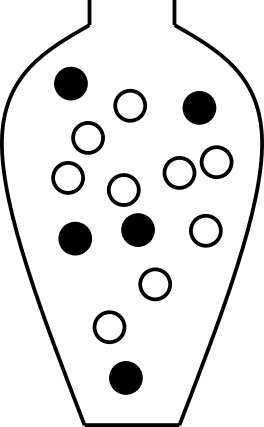
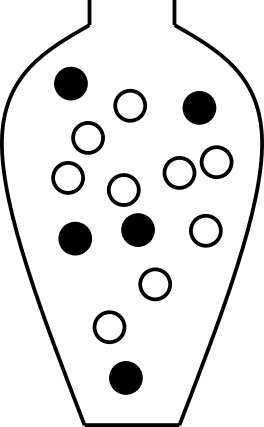

1 Introduction to probability
Some things are more likely to occur than others. Compare:
- the chance of the sun rising tomorrow with the chance that no-one is infected with COVID-19 tomorrow
- the chance of a dark winter in Stockholm with the chance of no rainy days over the summer months in Stockholm
We intuitively believe that the chance of sun rising or dark winter occurring are enormously higher than COVID-19 disappearing over night or having no rain over the entire summer. Probability gives us a scale for measuring the likeliness of events to occur. Probability rules enable us to reason about uncertain events. The probability rules are expressed in terms of sets, a well-defined collection of distinct objects.
Suppose we perform an experiment that we do not know the outcome of, i.e. we are uncertain about the outcome. We can however list all the outcomes that might occur.
- sample space is the set \(S\) of these possible outcomes of the experiment, e.g. getting 1, 2 etc. on the 6-sided dice \(S=\{1,2,3,4,5,6\}\)
- an event is a subset of the sample space
- an event is said to occur if the outcome of the experiment belong to this set
- The complement, \(E'\), of the event \(E\) contains all the outcomes in \(S\) which are not in \(E\)
- Two sets \(E\) and \(F\), such that \(E \cap F = \emptyset\), are said to be disjoint
1.1 Axioms of probability
- \(0 \leq P(E) \leq 1\) for any event \(E \subseteq S\)
- \(P(S) = 1\)
- if \(E\), \(F\) are disjoint events, then \(P(E \cup F) = P(E) + P(F)\)
1.2 Common rules of probability
Based on the axioms the following rules of probability can be proved.
- Complement rule: let \(E \subseteq S\) be any event, then \(P(E') = 1 - P(E)\)
- Impossible event: \(P(\emptyset)=0\)
- Probability of a subset: let \(E,F \subseteq S\) be events such that \(E \subseteq F\) then \(P(F) \geq P(E)\)
- Addition rule: let \(E,F \subseteq S\) be any two events, then \(P(E \cup F) = P(E) + P(F) - P(E \cap F)\)
1.3 Conditional probability
Let \(E,F \subseteq S\) be two events that \(P(E)>0\) then the conditional probability of \(F\) given that \(E\) occurs is defined to be: \[P(F|E) = \frac{P(E\cap F)}{P(E)}\]
Product rule follows conditional probability: let \(E,F \subseteq S\) be events such that \(P(E)>0\) then: \[P(E \cap F) = P(F|E)P(E) = P(E|F)P(F)\]
1.4 The urn model
The urn model is a simple model commonly used in statistics and probability. In the urn model, real objects (such as people, mice, cells, genes, molecules, etc) are represented by balls of different colors or labels. A fair coin can be represented by an urn with two balls representing the coin’s two sides; H and T. A group of people can be modelled in an urn model, if age is the variable of interest, we write the age of each person on the balls. If we instead are interested in if the people are allergic to pollen or not, we color the balls according to allergy status.
 

Figure 1.1: Urn models of a fair coin, age of a group of people, pollen allergy status of a group of people.
In the urn model every unit (ball) is equally likely of being selected. This means that the urn model is well suited to represent flipping a fair coin. However, a biased coin can also be modelled using an urn model, by changing the number of balls that represent each side of the coin.
By drawing balls from the urn with (or without) replacement, probabilities and other properties of the model can be inferred.
1.5 Random variables
The outcome of a random experiment can be described by a random variable. Whenever chance is involved in the outcome of an experiment the outcome is a random variable.
A random variable can not be predicted exactly, but the probability of all possible outcomes can be described. The sample space is the set of all possible outcomes of a random variable. Note, the sample space is not always countable.
A random variable is usually denoted by a capital letter, \(X, Y, Z, \dots\). Values collected in an experiment are observations of the random variable, usually denoted by lowercase letters \(x, y, z, \dots\).
The sample space is the collection of all possible observation values.
The population is the collection of all possible observations.
A sample is a subset of the population.
Example random variables and probabilites:
- The weight of a random newborn baby, \(W\). \(P(W>4.0kg)\)
- The smoking status of a random mother, \(S\). \(P(S=1)\)
- The hemoglobin concentration in blood, \(Hb\). \(P(Hb<125 g/L)\)
- The number of mutations in a gene
- BMI of a random man
- Weight status of a random man (underweight, normal weight, overweight, obese)
- The result of throwing a die
Conditional probability can be written for example \(P(W \geq 3.5 | S = 1)\), which is the probability that \(X \geq 3.5\) if \(S = 1\), in words “the probability that a smoking mother has a baby with birth weight of 3.5 kg or more”.
Random variables are divided based on their data type, categorical (nominal or ordinal) or numeric (discrete or continuous).